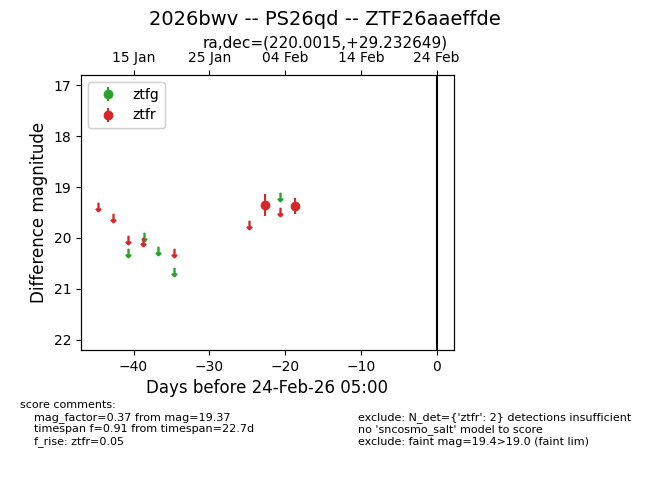
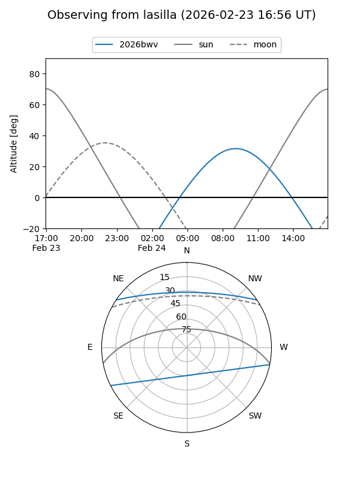
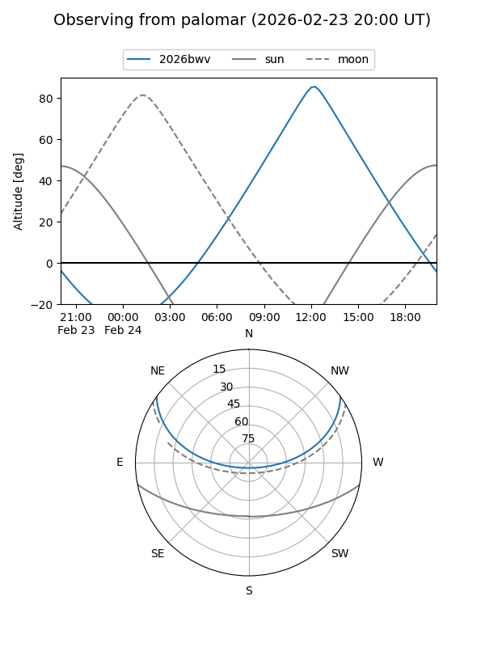

2026bwv
Target 2026bwv at 2026-02-24 09:08
Aliases and brokers:
FINK: link
Lasair: link
ALeRCE: link
TNS: link
YSE: link
alt names
ZTF26aaeffde (ztf,fink_ztf)
2026bwv (tns,yse)
PS26qd (panstarrs)
Coordinates:
equatorial (ra, dec) = 220.0015,+29.23265
equatorial (HMS+DMS) = 14:40:00.36,+29:13:57.54
galactic (l, b) = (44.3690,+66.03597)
Flags:
Photometry:
last ztfr=19.37
2 ztfr detections
Lightcurve

Visibility


Additional plots